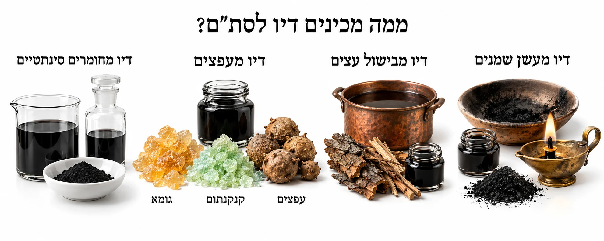
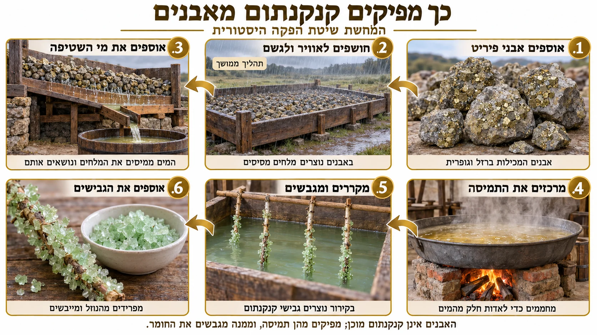

דיו לסת״ם – החומרים ודרכי ההכנה

בעז״ה נפתח סדרה של שני מאמרים בנושא הדיו לסת״ם. במאמר הראשון נכיר את החומרים ואת דרכי ההכנה, ובשני נברר את השיטות בהלכה ואת המנהג למעשה.
למה דווקא דיו?
הלכה למשה מסיני שספרי תורה, תפילין ומזוזות נכתבים בדיו (ירושלמי מגילה). וסמך לדבר: ״וַאֲנִי כֹּתֵב עַל הַסֵּפֶר בַּדְּיוֹ״ (ירמיהו לו, יח).
כיצד מכינים את הדיו שעליו נאמרה ההלכה? בהמשך נבאר איזו דרך מוסכמת יותר, ואיזו שנויה במחלוקת.
בראשונים מתוארות 4 דרכי הכנת דיו, המבוססות על חומרים שונים. נכיר תחילה את החומרים ואת תפקידם, ובהמשך נעמוד על ההבדלים ההלכתיים בין דרכי ההכנה.
1. דיו מעשן שמנים
הרמב״ם מתאר הכנת דיו מפיח הנאסף משרפת שמנים וכדומה. מערבים אותו בשרף אילן ובמעט דבש, יוצרים רקיקים ומייבשים אותם. לקראת הכתיבה משרים אותם במי עפצים (תפילין פ"א, ה"ד).
2. דיו מבישול עצים
בגמרא נאמר: 'כל השרפים יפין לדיו' (שבת כג ע״א). רבנו תם מפרש ש'שרף' הוא לחלוחית העץ שממנה מכינים את הדיו (תוספות שם). דרך הכנה זו נעשית באמצעות בישול העצים והפקת לחלוחיתם. את שיטתו בעניין דיו עפצים ואת ראיותיו נבאר במאמר הבא.
3. עפצים, קנקנתום וגומא
דרך מקובלת נוספת היא הכנת דיו משלושה חומרים:
עפצים: גידולים הנוצרים ברקמת עץ האלון בעקבות פעילות צרעה זעירה המטילה בו את ביצתה. העפץ מתפתח סביב הזחל ומספק לו מזון ומחסה. הוא אינו פרי האלון; הפרי הוא הבלוט. את העפצים כותשים ומבשלים במים.
קנקנתום: הקנקנתום המשמש להכנת דיו הוא גופרת ברזל מינרל המופק מהטבע או בדרך כימית. כשמוסיפים אותו למי העפצים, נוצרת תגובה המשחירה את התערובת.

גומא: גומי ערביק, המופק מהפרשות של עצי שיטה. הוא מסייע לדיו להידבק לקלף ומשפיע על סמיכותו ועל זרימתו מן הקולמוס.
בתהליך ההכנה מבשלים את העפצים, מסננים, מוסיפים את יתר החומרים ומתאימים את הסמיכות לכתיבה. המשנה ברורה מביא את המנהג להכין דיו מתערובת זו (סימן לב, ס״ק ח), וכך עושים כיום בדיו המצוי שכותבים בו הסופרים, נהרי הדר ועוד.
4. דיו מחומרים כימיים
כיום אפשר לייצר דיו גם מחומרים סינתטיים, ללא שימוש בדרכי ההכנה שתוארו לעיל. האם גם דיו כזה כשר לכתיבת סת״ם?
לאחר שהכרנו את החומרים, נוכל להבין את השאלה ההלכתית: האם כל הדרכים הללו כשרות, האם יש מעלה בדיו שאפשר למוחקו? מהי הדרך שיבור לו הסופר שהיא המהודרת ביותר? על כך ועוד במאמר הבא.
הרב יוחאי אוחיון
מומחה בהוראת הכתב הספרדי | ראש מכון אמנות הסת"ם